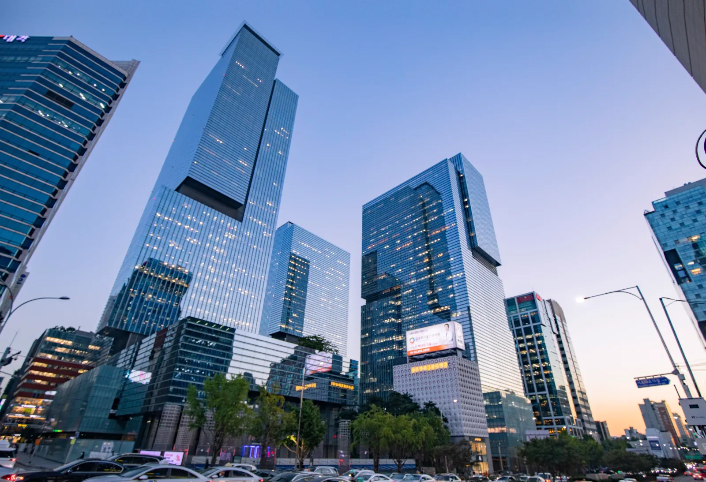
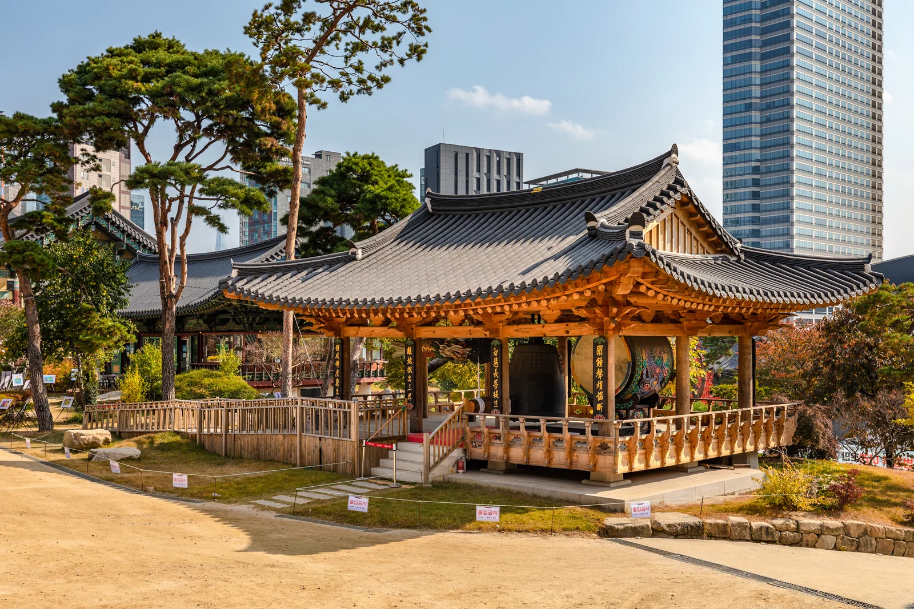
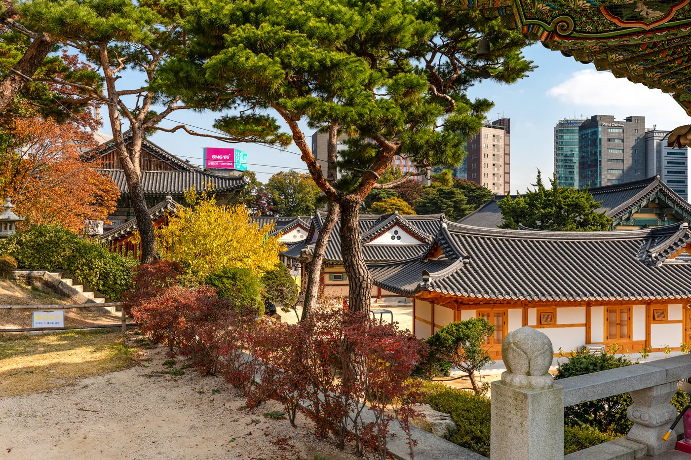
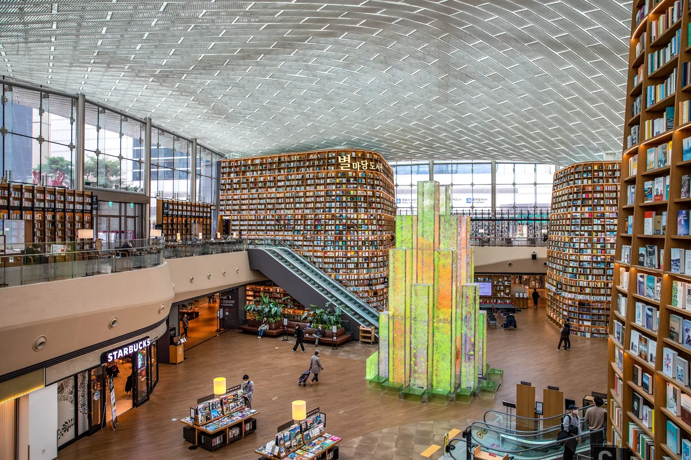
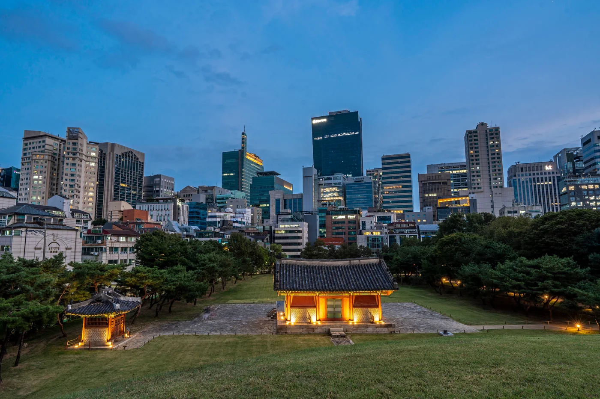
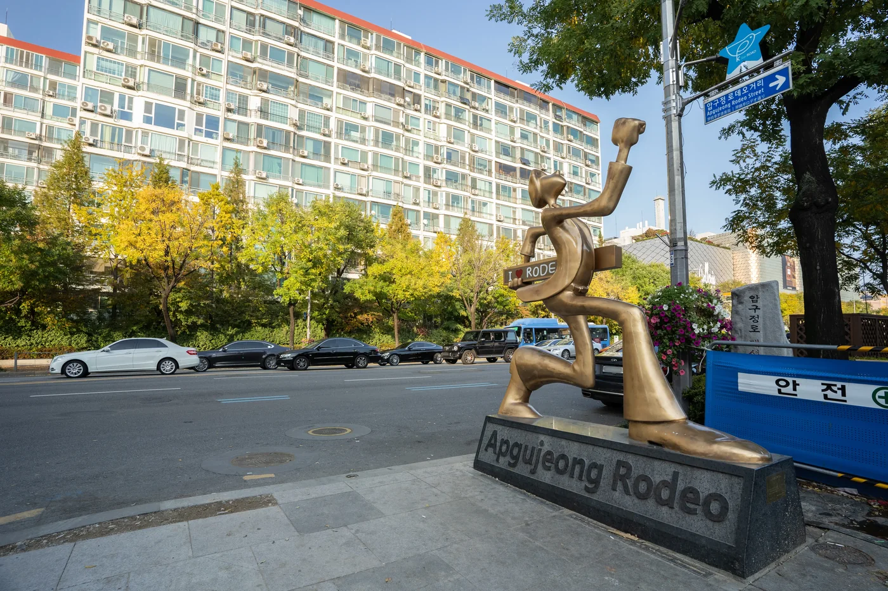
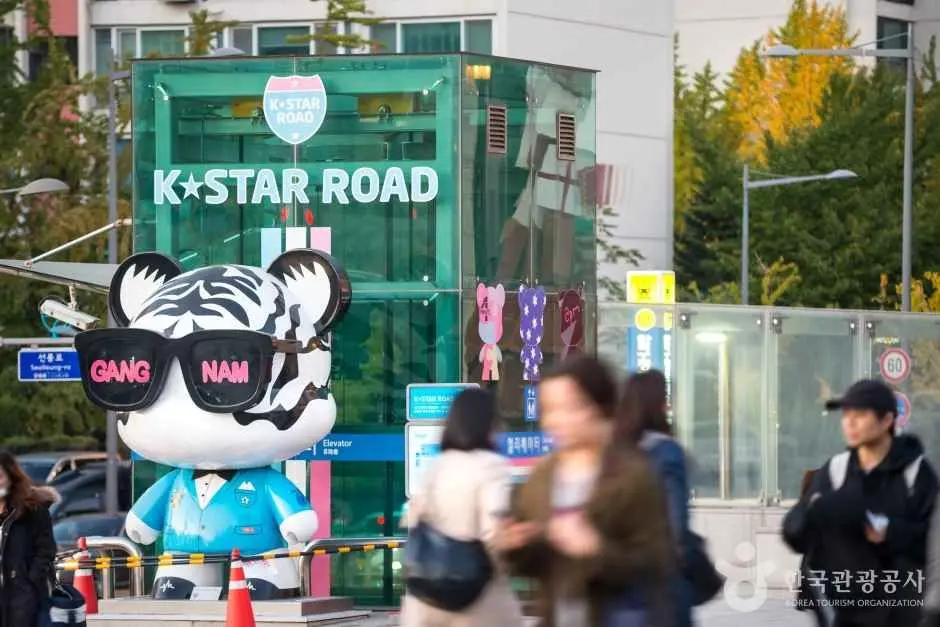
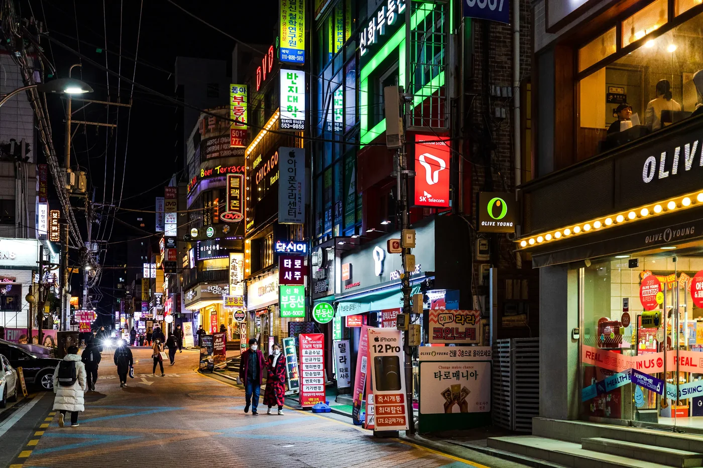

Gangnam Travel Guide 2026
Gangnam is famous enough that many travelers arrive with an image of it before they know what they actually want to do there.

The first thing to understand is geography.
Gangnam Station, COEX, Bongeunsa, Apgujeong, Dosan Park and Cheongdam are not one compact sightseeing neighborhood. They sit in separate parts of a large district, and moving between the main visitor areas usually means using the subway, a bus or a taxi.
For a first visit, the clearest route is:
Bongeunsa Temple → COEX / Starfield Library → Seonjeongneung Royal Tombs → Gangnam Station for dinner and the evening
If Korean fashion, K-pop, design or destination cafés are the reason you came south of the river, use a different route:
Dosan Park → Apgujeong Rodeo → K-Star Road → Cheongdam
Most travelers do not need both in one day.
And if your first Seoul trip is only three or four days and your priorities are Gyeongbokgung, Bukchon, Insadong, Jongno and other central or historic areas, Gangnam can wait for another trip. Its value is strongest when something here matches what you actually came to Seoul to do.

Photo: Seoul Tourism Organization · KOGL Type 1
What Gangnam Is Actually Like
“Gangnam” is often used loosely for the southern side of Seoul. This guide stays with Gangnam-gu and the visitor areas that belong naturally to it.
That matters because many Seoul itineraries stretch the name until it includes Lotte World, Seokchon Lake, Banpo Bridge and Seoul Arts Center. Those places may fit the same trip, but they create a poor Gangnam day when they are treated as one neighborhood.
Around COEX and Samseong, the scale is large: convention halls, shopping, the Starfield Library and busy indoor spaces. Across the road, Bongeunsa Temple changes the pace almost immediately. Farther west, Seonjeongneung puts Joseon royal tombs and wooded paths in the middle of modern office Seoul.
Around Dosan Park, Apgujeong Rodeo and Cheongdam, the reason to visit shifts toward Korean fashion, design, cafés, galleries, K-pop and higher-end shopping.
Gangnam Station has another role again. It is better as an evening district—underground shopping, dinner, cafés, bars and karaoke—than as the starting point for every Gangnam itinerary.
The important decision is not how many Gangnam attractions you can collect.
It is which part of Gangnam deserves your time.
Choose Your Gangnam First
First visit, mixed interests
Start with:
Bongeunsa → COEX → Seonjeongneung → Gangnam Station
This gives you four different sides of the district in a sequence that makes sense: temple, modern commercial Seoul, royal history and an active evening area.
With only three or four hours, remove Seonjeongneung.
Korean fashion, design or K-pop
Use:
Dosan Park → Apgujeong Rodeo → K-Star Road → Cheongdam
This route has a reason to exist when you already care about Korean brands, cafés, galleries, K-pop, beauty or a specific restaurant.
Dinner, shopping and late-night energy
Go straight to:
Gangnam Station / Sinnonhyeon
There is no need to spend the afternoon there first. The area becomes more interesting as office hours end and the dinner crowd arrives.
None of those fit your trip
Gangnam is optional.
That is especially true on a short first visit to Seoul.
Route 1 — First-Time Gangnam
Bongeunsa → COEX / Starfield Library → Seonjeongneung → Gangnam Station
This route works because every stop changes the day rather than repeating the same kind of attraction.
1. Start at Bongeunsa Temple
Bongeunsa sits beside one of Seoul's largest commercial and convention complexes. That contrast is the reason to begin here.
The temple is an active Buddhist site. Walk the grounds, look at the halls and leave room for the fact that other visitors may be there to pray rather than sightsee.
For most travelers, 45–60 minutes is enough for a first visit unless you are joining a program or want a slower morning.
You can then cross into COEX within the same part of Samseong rather than spending the first half of the day on transit.

Photo: Seoul Tourism Organization · KOGL Type 1
2. Enter COEX knowing what you came for
COEX can be a quick stop or most of the afternoon.
Decide before you enter:
- Starfield Library + a look around: short visit
- Library + lunch + shopping: medium visit
- COEX Aquarium: longer family / indoor block
- Convention or exhibition: let the event anchor the day
The Starfield Library is free to enter and makes sense when you are already at COEX. Its 13-meter bookshelves are the visual landmark most travelers recognize.
The library itself can be brief. Shopping, lunch, an exhibition or the aquarium are what turn COEX into a longer commitment.

Photo: Korea Tourism Organization · KOGL Type 1
3. Solve lunch before crossing the district
COEX is a practical lunch stop because it avoids another detour.
A saved restaurant is fine. Otherwise, eat somewhere convenient and keep the route moving.
The meal does not need to become another destination unless food is one of the main reasons for your Gangnam day.
4. Add Seonjeongneung on the full route
Seonjeongneung contains the royal tombs of King Seongjong, Queen Jeonghyeon and King Jungjong and forms part of the UNESCO-listed Royal Tombs of the Joseon Dynasty.
After COEX, the experience changes completely: wooded paths, burial mounds and a quieter landscape surrounded by modern Seoul.

Photo: Seoul Tourism Organization · KOGL Type 1
Plan roughly 45–60 minutes for a first visit.
Seonjeongneung is currently closed on Mondays. On a Monday—or if COEX has already taken longer than expected—leave it out and continue toward Gangnam Station.
Opening and admission hours can change, so recheck the official listing before your travel date.
5. Let Gangnam Station finish the day
Gangnam Station is easier to understand later in the day.
The underground shopping center is a straightforward place for affordable fashion and beauty browsing. Above ground, the streets toward Sinnonhyeon fill with restaurants, cafés, bars and karaoke.
Have dinner here and decide afterward whether the night continues.
A café, karaoke room or one more walk through the side streets may be enough. There is no need to manufacture a late night if everyone is tired.
Suggested Timing — Full Route
A realistic outline:
- 10:00 — Bongeunsa Temple
- 11:00 — COEX / Starfield Library
- 12:30–13:30 — Lunch around COEX
- 14:00 — More COEX time or move on
- 15:00–16:00 — Seonjeongneung
- Late afternoon — Move toward Gangnam Station
- Evening — Underground shopping, dinner and whatever still sounds good
The order matters more than the clock.
Shopping, an aquarium visit, a convention or a long lunch can easily add an hour or two.
Short version — about 3 to 4 hours
Use:
Bongeunsa → COEX / Starfield Library → Gangnam Station for dinner
Seonjeongneung is the first stop to remove.
Adding COEX Aquarium
Treat the aquarium as a real activity, not a 20-minute add-on.
Either leave Seonjeongneung for another day or accept that this becomes a longer Gangnam itinerary.
Route 2 — Fashion, Design & K-Pop Gangnam
Dosan Park → Apgujeong Rodeo → K-Star Road → Cheongdam
This route is for travelers who care more about current Korean fashion, cafés, design, K-pop or destination shopping than about COEX.
It can take half a day or most of a day depending on how much you shop, stop for coffee or stay for dinner.
1. Start around Dosan Park
Dosan Park commemorates independence activist and educator Ahn Chang-ho.
For this itinerary, it also gives you a calm geographic anchor before the denser commercial streets around Apgujeong.
A short walk through the park is enough unless the memorial itself interests you. The surrounding Dosan area is where the route begins to shift toward Korean flagship stores, beauty, cafés and design.
2. Let Apgujeong Rodeo expand or shrink with your interests
Apgujeong Rodeo rewards browsing when the shops are part of the reason you came.
A traveler following Korean fashion brands may stay for hours. Someone with little interest in shopping can move through much faster.
Pick a few stores or cafés you genuinely care about and leave space for what you find on the street. Social-media lists become inefficient when they turn the day into constant backtracking.

Photo: Korea Tourism Organization · KOGL Type 1
3. Use K-Star Road as a fan layer
K-Star Road runs from the Apgujeong Rodeo area toward Cheongdam, with GangnamDol figures tied to K-pop groups along the route.
Fans have a clear reason to notice it. Travelers with no K-pop interest can simply treat it as part of the walk toward Cheongdam.

Photo: Korea Tourism Organization · IR Studio · KOGL Type 1
Entertainment-company buildings need a different expectation. Some agencies remain in Gangnam, but their offices are workplaces. There are no public tours or lobbies simply because a company is famous.
A current exhibition, fan event, merchandise space or other public program is a better reason to change the itinerary.
4. Continue into Cheongdam only when something there matters
Cheongdam is where the route becomes more selective.
It is strong for luxury flagships, galleries, premium dining, beauty appointments and some K-pop-related interests. That does not make it a required stop for everyone.
Stay longer when you have a specific brand, gallery, meal, appointment or fan destination.
Otherwise, finishing in Apgujeong is a sensible ending.
Where Garosu-gil Fits Now
Garosu-gil still has shops, cafés and K-beauty businesses, and official Seoul tourism continues to list it as a Gangnam shopping area.
Korea Inside does not treat it as an automatic stop on the main fashion route.
Add it when you already have a specific café, store, beauty appointment or other reason to be in Sinsa. Without that reason, the Dosan / Apgujeong side has a clearer role in this guide.
This is an editorial priority, not a claim that Garosu-gil has disappeared. Retail streets change quickly, and the balance can change again.
Gangnam Station After Dark
Gangnam Station is one of Seoul's major meeting and commercial areas, but its daytime reputation can confuse visitors.
Start underground if affordable fashion or beauty browsing interests you.
Then move above ground for dinner. The streets toward Sinnonhyeon offer everything from casual meals and Korean barbecue to cafés, bars, karaoke and late food.

Photo: Seoul Tourism Organization · KOGL Type 1
For most travelers, dinner and one late stop are enough.
If clubs are the main objective, check current venues close to the trip. Nightlife businesses change too quickly for an old permanent “best clubs” list to be reliable.
Shopping in Gangnam — Match the Area to the Purchase
Gangnam shopping works better when the district follows what you want to buy.
Affordable / casual
Gangnam Station Underground Shopping Center
Good for fashion and beauty browsing without turning one store into a cross-city destination.
Korean fashion / current brands
Dosan / Apgujeong
This is the stronger route when Korean brands, flagships and current retail culture are part of the trip.
Luxury / galleries
Cheongdam
Worth the time when a brand, gallery, restaurant or premium shopping experience is already on your list.
Large indoor shopping
COEX
The practical option when your itinerary already puts you in Samseong or when the weather pushes the day indoors.
A mildly interesting store is rarely worth crossing all of Gangnam for. Cluster shopping with the rest of the day.
K-Pop in Gangnam
Gangnam still has real K-pop context, but the practical version is different from the old agency-building pilgrimage.
K-Star Road gives fans a public route through Apgujeong and toward Cheongdam. COEX and other venues also host K-culture retail, media displays and temporary fan events.
Agency offices are not visitor facilities.
A better K-pop day starts with current public information:
check official events → choose one public fan destination → fit it into the Apgujeong / Cheongdam or COEX route
That leaves room for fandom without spending hours waiting outside a workplace.
K-Beauty and Fixed Appointments
Gangnam attracts travelers for beauty and wellness as much as for sightseeing.
For a general Travel Guide, the most relevant categories are:
- beauty shopping
- hair or scalp care
- personal color
- spas and non-medical wellness
- booked styling or beauty services
A fixed appointment should control the geography of the day.
A 2 p.m. booking in Cheongdam pairs naturally with Apgujeong or Dosan. It pairs poorly with a morning plan that is still deep inside COEX shortly before the appointment.
Medical and invasive cosmetic procedures belong to a different decision process involving provider quality, medical risk and recovery. They are not treated here as casual neighborhood activities.
What to Eat in Gangnam
The route is more useful than a permanent restaurant ranking.
COEX / Samseong
Best when lunch needs to be easy, indoors and close to the Route 1 stops.
Gangnam Station / Sinnonhyeon
The most flexible dinner area in this guide, especially for groups or travelers who want the night to continue afterward.
Apgujeong / Dosan / Cheongdam
Better for a destination café, reservation, premium meal or somewhere you already chose before the trip.
Restaurant turnover is fast. Korea Inside should recheck a small number of named recommendations close to publication rather than maintain a long list that ages badly.
Four Planning Mistakes That Waste Time in Gangnam
1. Treating the whole district as one walking neighborhood
COEX, Gangnam Station and Apgujeong are separate planning zones.
The official Gangnam tourism map itself estimates roughly 10–20 minutes by public transit between the major visitor areas. Build the day around that reality.
2. Using Gangnam Station for everything
The name is famous, but it is not the correct station for every Gangnam attraction.
COEX is served by Samseong and Bongeunsa. Apgujeong Rodeo has its own station. Picking the right station saves more time than forcing every route through Gangnam Station.
3. Entering COEX without deciding how long you want to stay
The library can be quick. The mall, lunch, shopping, aquarium and an exhibition can consume most of the day.
Pick the COEX version before you arrive.
4. Choosing the hotel because “Gangnam” sounds convenient
A Gangnam address is only useful when the itinerary is also Gangnam-heavy.
If most mornings start around palaces, Jongno, Insadong or central Seoul, the repeated cross-river travel becomes part of every day.
Should You Stay in Gangnam or Just Visit?
Gangnam can be an excellent base for a south- and southeast-Seoul-heavy trip. It is not the automatic default for a first visit.
Stay in Gangnam when several of these are true
- you have repeated Gangnam appointments
- COEX or a convention matters
- Jamsil is a major part of the itinerary
- your trip combines Gangnam with several east-side stops rather than mostly historic central Seoul
- shopping, dining or nightlife south of the river matters
- you have beauty / wellness bookings nearby
- business meetings are concentrated in this part of Seoul
- you have already seen the major palace / Jongno sights on an earlier trip
The exact station still matters. Gangnam Station, Sinnonhyeon, Seolleung and Samseong create different daily travel patterns.
Visit Gangnam from another base when central Seoul dominates
If most days revolve around:
- Gyeongbokgung
- Bukchon
- Insadong
- Jongno
- Myeongdong
- central Seoul museums and markets
and Gangnam appears once, keep the hotel where the rest of the trip is.
Visit Gangnam for the half day or evening, then return.
Where to Stay in Gangnam
The area choice comes before the hotel.
Before booking, check:
- which station you will actually use
- how far the hotel is from the station entrance
- where fixed appointments are
- whether you will cross the river every day
- which line matters most for your itinerary
- whether the surrounding streets still work for you at night
Korea Inside keeps the hotel decision in a separate Stay Guide so this Travel Guide can stay focused on the neighborhood itself.
What to Check Before You Go
Gangnam has more fast-changing content than a palace district.
Close to the trip, recheck:
COEX exhibitions and conventions
A major event can make COEX more interesting and more crowded at the same time.
Apgujeong / Dosan pop-ups and flagship stores
Temporary retail and brand collaborations come and go quickly.
K-pop events
Birthday cafés, fan events and public K-culture programs are date-specific.
Gallery exhibitions
Cheongdam and Apgujeong are more rewarding when you know what is actually on.
Operating hours
Recheck Bongeunsa, Seonjeongneung, COEX facilities and any paid attraction shortly before the visit.
Temporary events belong in Korea Inside's current layer rather than being frozen into the evergreen route.
The Korea Inside Default Gangnam Recommendation
For most first-time visitors who decide to spend a day in Gangnam:
Bongeunsa → COEX / Starfield Library → Seonjeongneung → Gangnam Station
For a shorter visit:
Bongeunsa → COEX → Gangnam Station
For travelers whose real interests are Korean fashion, design or K-pop:
Dosan Park → Apgujeong Rodeo → K-Star Road → Cheongdam
Keep Jamsil separate. Lotte World, Seoul Sky and Seokchon Lake belong to a Jamsil day rather than being added simply because they are also south of the river.
Gangnam becomes easier once the goal is no longer to “finish” Gangnam.
Pick the cluster that has a reason to be in your trip.
FAQ
Is Gangnam worth visiting on a first trip to Seoul?
Yes when COEX, modern Seoul, shopping, K-pop, beauty, fashion or southern-Seoul nightlife matter to you.
On a three- or four-day trip focused on palaces, traditional neighborhoods and central Seoul, Gangnam is optional.
How much time do I need in Gangnam?
About 3–4 hours is enough for Bongeunsa, a focused COEX visit and dinner around Gangnam Station.
The fuller Route 1 is closer to 6–8 hours once lunch, Seonjeongneung and evening time are included.
Shopping, an aquarium, a convention or a fixed appointment can extend the day.
Is COEX near Gangnam Station?
They are in the same district but not the same visitor zone.
COEX is by Samseong Station and Bongeunsa Station. Gangnam Station is farther west, so plan to use transit between them.
Is Lotte World in Gangnam?
No.
Lotte World, Seoul Sky and Seokchon Lake are in Jamsil / Songpa-gu. Korea Inside treats Jamsil as a separate travel area.
Is Garosu-gil still worth visiting?
Yes when you have a specific shop, café, beauty stop or Sinsa-area plan.
For a general fashion / design route, this guide gives Dosan and Apgujeong priority rather than treating Garosu-gil as mandatory.
Should I stay in Gangnam?
Stay when a large share of the itinerary is actually in Gangnam, Jamsil or nearby south/east Seoul and repeated appointments or business make the location practical.
When most sightseeing is around palaces, Jongno, Insadong and central Seoul, Gangnam usually works better as a visit than as the default hotel base.